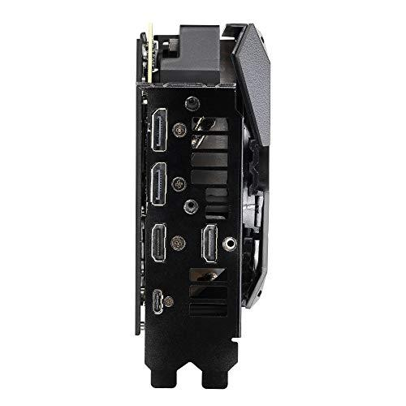
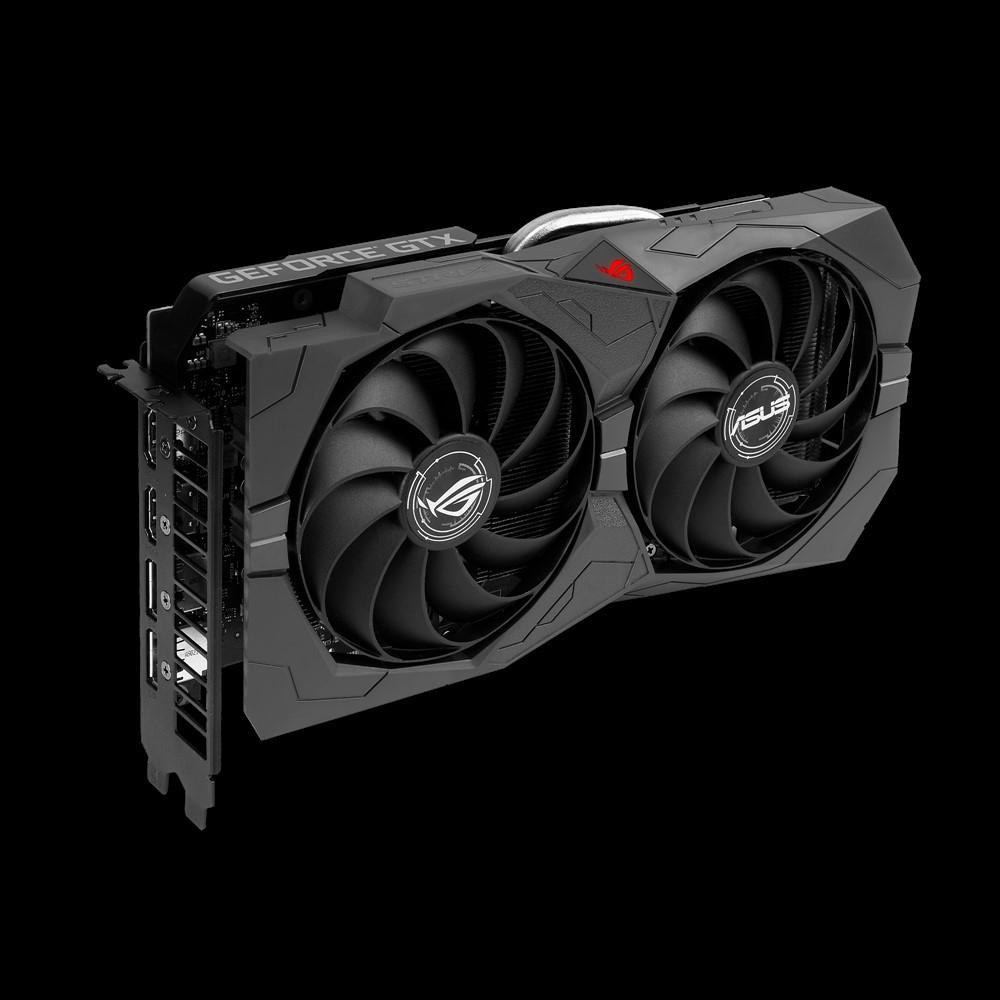
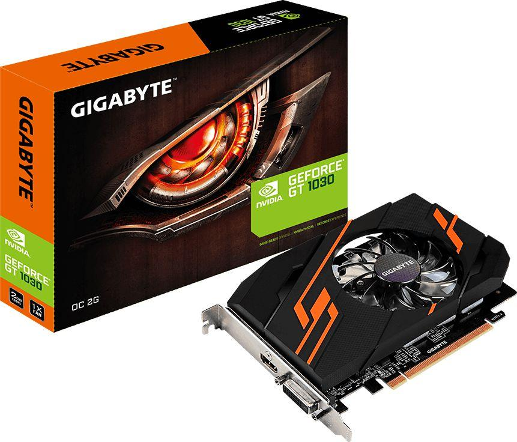

Kaip sužinoti, kuri grafikos plokštė yra kompiuteryje ar nešiojamuoju kompiuteriu - Langai 2020
2020.10.29 12:41

Pradedantiesiems Internetas Mobiliuosius įrenginius Nešiojamieji kompiuteriai „ios“ ir „Macos“ Žinios
Kaip sužinoti, kuri grafikos plokštė yra kompiuteryje ar nešiojamuoju kompiuteriu
Langai 2019 Kaip sužinoti vaizdo plokštės modelį naudojant „Windows Device Manager“ Sužinokite, kuri vaizdo plokštė naudojama įrenginio ID (aparatūros ID) Kaip sužinoti vaizdo plokštės modelį, jei kompiuteris ar nešiojamas kompiuteris neįsijungia Vaizdo įrenginio nustatymas naudojant AIDA64 programą Papildomi būdai sužinoti, kuri grafikos plokštė naudoja „Windows“ Peržiūrėkite grafikos kortelės informaciją „DirectX“ diagnostikos įrankyje (dxdiag) Sistemos informacijos įrankio naudojimas Kaip sužinoti, kuri vaizdo plokštė yra įdiegta - vaizdo įrašas Ne taip seniai rašiau apie tai, kaip tinkamai įdiegti ar atnaujinti vaizdo plokštės tvarkykles, taip pat šiek tiek palietė klausimą, kaip iš tikrųjų sužinoti, kuri vaizdo plokštė yra įdiegta kompiuteryje ar nešiojamuoju kompiuteriu.Šiame vadove daugiau sužinosite, kaip sužinoti, kuri vaizdo plokštė yra „Windows 10“, „8“ ir „Windows 7“, taip pat tais atvejais, kai kompiuteris nepaleidžiamas (kartu su vaizdo įrašu šiuo klausimu, vadovo pabaigoje). Ne visi vartotojai žino, kaip tai padaryti ir, susidūrę su tuo, kad „Video Device Controller“ (VGA suderinamas) arba „Standard VGA“ grafikos adapteris yra parašytas „Windows“ įrenginių tvarkyklėje, jie nežino, kur jį atsisiųsti ir ką įdiegti. Žaidimas ir programos, naudojantys grafiką, neveikia be reikalingų tvarkyklių. Taip pat žiūrėkite: Kaip sužinoti pagrindinės plokštės ar procesoriaus lizdą.
Kaip sužinoti vaizdo plokštės modelį naudojant „Windows Device Manager“
Pirmas dalykas, kurį turėtumėte pabandyti pamatyti, kokią vaizdo plokštę jūsų kompiuteryje reikia eiti į įrenginių tvarkyklę ir patikrinti, ar ji yra.
Greičiausias būdas tai padaryti operacinėje sistemoje „Windows 10“, „Windows 7“, „Windows 7“ ir „Windows XP“ yra paspausti „Win + R“ klavišus (kur „Win“ yra raktas su OS logotipu) ir įveskite komandą devmgmt.msc . Kita galimybė - dešiniuoju pelės klavišu spustelėkite „Mano kompiuteris“, pasirinkite „Ypatybės“ ir paleiskite Įrenginių tvarkytuvę iš skirtuko „Aparatūra“.
„Windows 10“ elementas „Įrenginių tvarkytuvas“ taip pat yra mygtuko Pradėti kontekstiniame meniu.
Labiausiai tikėtina, kad prietaisų sąraše pamatysite skyrių „Vaizdo adapteriai“ ir jį atidarysite - vaizdo plokštės modelį. Kaip jau rašiau, net jei vaizdo adapteris, įdiegęs „Windows“, buvo teisingai apibrėžtas, norint užbaigti darbą, vis tiek turite įdiegti oficialius tvarkykles, o ne „Microsoft“.
Tačiau galima pasirinkti ir kitą parinktį: skirtuko lape vaizdo adapteriai rodys „Standartinės VGA grafikos adapteris“, o „Windows XP“ - „Vaizdo valdiklis (VGA suderinamas)“ sąraše „Kiti įrenginiai“. Tai reiškia, kad vaizdo plokštė nebuvo apibrėžta, o „Windows“ nežino, kokie tvarkykles naudoti. Turėsime išsiaiškinti sau.
Sužinokite, kuri vaizdo plokštė naudojama įrenginio ID (aparatūros ID)
Pirmasis būdas, kuris dažniausiai veikia, yra įdiegtos vaizdo plokštės nustatymas naudojant aparatūros ID.
Įrenginio tvarkyklėje dešiniuoju pelės klavišu spustelėkite nežinomą VGA vaizdo adapterį ir pasirinkite „Properties“. Po to eikite į skirtuką „Informacija“ ir lauke „Nuosavybė“ pasirinkite „Įrenginio ID“.
Po to nukopijuokite bet kurią reikšmę į iškarpinę (dešiniuoju pelės klavišu ir pasirinkdami atitinkamą meniu punktą), pagrindiniai mūsų parametrai yra du parametrai pirmoje identifikatoriaus dalyje - VEN ir DEV, kurie nurodo atitinkamai gamintoją ir įrenginį.
Po to paprasčiausias būdas nustatyti, koks vaizdo plokštės modelis yra, yra eiti į http://devid.info/ru ir įvesti VEN ir DEV iš įrenginio ID į viršų lauką.
Dėl to gausite informaciją apie patį vaizdo adapterį, taip pat gebėsite jį atsisiųsti. Tačiau rekomenduoju atsisiųsti tvarkykles iš oficialios NVIDIA, AMD ar Intel svetainės, ypač todėl, kad dabar žinote, kokia vaizdo plokštė yra.
Kaip sužinoti vaizdo plokštės modelį, jei kompiuteris ar nešiojamas kompiuteris neįsijungia
Vienas iš galimų variantų yra būtinybė nustatyti, kuri vaizdo plokštė yra kompiuteryje ar nešiojamuoju kompiuteriu, kuriame nėra gyvenimo požymių. Esant tokiai situacijai, viskas, kas gali būti padaryta (išskyrus galimybę įdiegti vaizdo plokštę kitame kompiuteryje), yra tirti žymenis arba, jei yra su integruotu vaizdo adapteriu, išsiaiškinti procesoriaus specifikacijas.
Stalinių grafinių plokščių lipdukai dažniausiai turi žymenų „plokščią“ pusę, kad būtų galima nustatyti, kuris lustas naudojamas. Jei nėra aiškaus ženklinimo, kaip ir žemiau esančioje nuotraukoje, tada gali būti gamintojo modelio identifikatorius, kurį galima įvesti paieškoje internete, ir greičiausiai pirmieji rezultatai apims informaciją apie tai, kokia vaizdo plokštė.
Jei norite sužinoti, kuri grafikos plokštė yra įdiegta jūsų nešiojamajame kompiuteryje, jei tai neįsijungia, paprasčiausias būdas tai padaryti yra ieškant nešiojamojo kompiuterio modelio specifikacijų internete, jame turėtų būti tokia informacija.
Jei kalbame apie nešiojamojo kompiuterio vaizdo plokštės apibrėžimą ženklinant, tai yra sunkiau: galite tik žiūrėti į grafikos mikroschemą, ir norėdami į jį patekti, turėsite pašalinti aušinimo sistemą ir pašalinti šiluminę pasta (kurią nerekomenduojame daryti visiems, kurie nėra tikri, kad tai yra tikras gali tai padaryti). Lustelėje matysite panašią nuotrauką.
Jei ieškote internete, kad atpažintumėte nuotraukose pažymėtą identifikatorių, pirmieji rezultatai parodys, kokio vaizdo įrašo mikroschema yra, kaip ir sekančioje ekrano nuotraukoje.
Pastaba: darbastalio vaizdo plokščių lustuose yra tie patys ženklai ir jie taip pat turės būti „pasiekiami“ šalinant aušinimo sistemą.
Integruotai grafikai (integruota grafika) viskas yra lengviau - tiesiog ieškokite internete savo kompiuterio ar nešiojamojo kompiuterio procesoriaus modelio specifikacijų, informacija, be kita ko, apims informaciją apie naudojamą integruotą grafiką (žr. Žemiau esančią ekrano kopiją).
Vaizdo įrenginio nustatymas naudojant AIDA64 programą
Pastaba: tai ne vienintelė programa, leidžianti matyti, kokia vaizdo plokštė yra įdiegta, yra ir kitų, įskaitant nemokamus: geresnes programas, skirtas išmokti kompiuterio ar nešiojamojo kompiuterio savybes.Kitas geras būdas gauti išsamią informaciją apie kompiuterio aparatūrą yra naudoti programą AIDA64 (ji turėjo pakeisti anksčiau populiarųjį Everestą). Su šia programa jūs galite ne tik sužinoti apie savo vaizdo plokštę, bet ir apie daugelį kitų kompiuterio ir nešiojamojo kompiuterio techninės charakteristikos. Nepaisant to, kad AIDA64 yra vertas atskirai peržiūrėti, čia kalbėsime tik apie šį vadovą. Atsisiųskite AIDA64 nemokamai, kurį galite rasti kūrėjo svetainėje http://www.aida64.com.
Programa paprastai mokama, bet 30 dienų (nors ir su tam tikrais apribojimais) puikiai veikia ir vaizdo plokštės nustatymui pakaks bandomosios versijos.
Paleidę atidarykite skyrių „Kompiuteris“, tada „Bendroji informacija“ ir sąraše raskite elementą „Ekranas“. Čia galite pamatyti vaizdo plokštės modelį.
Papildomi būdai sužinoti, kuri grafikos plokštė naudoja „Windows“
Be jau aprašytų metodų, „Windows 10“, „8“ ir „Windows 7“ yra papildomi sistemos įrankiai, leidžiantys gauti informaciją apie vaizdo plokštės modelį ir gamintoją, kuris kai kuriais atvejais gali būti naudingas (pvz., Jei administratoriui neleidžiama pasiekti įrenginio tvarkyklę).
Peržiūrėkite grafikos kortelės informaciją „DirectX“ diagnostikos įrankyje (dxdiag)
Visos modernios „Windows“ versijos turi vieną ar kitą „DirectX“ komponentų versiją, skirtą darbui su grafika ir garsu programose ir žaidimuose.
Šiuose komponentuose yra diagnostikos įrankis (dxdiag.exe), leidžiantis sužinoti, kuri vaizdo plokštė yra kompiuteryje ar nešiojamajame kompiuteryje. Jei norite naudoti įrankį, atlikite šiuos paprastus veiksmus:
Paspauskite klaviatūros klavišus „Win + R“ ir „Run“ lange įveskite dxdiag. Atsisiuntę diagnostikos įrankį, eikite į skirtuką „Ekranas“.
Nurodytame skirtuke bus rodomas vaizdo plokštės modelis (arba, tiksliau, juo naudojamas grafinis mikroschema), informacija apie tvarkykles ir vaizdo atmintį (mano atveju, dėl kokios nors priežasties jis rodomas neteisingai). Pastaba: tas pats įrankis leidžia jums sužinoti, kurią „DirectX“ versiją naudojate. Skaityti daugiau straipsnyje „DirectX 12“, skirtame „Windows 10“ (taikoma kitoms OS versijoms).
Sistemos informacijos įrankio naudojimas
Kita „Windows“ programa, leidžianti gauti informaciją apie vaizdo plokštę, yra „Sistemos informacija“. Jis prasideda panašiu būdu: paspauskite Win + R klavišus ir įveskite msinfo32.
Sistemos informacijos lange eikite į skyrių „Komponentai“ - „Ekranas“, kuriame lauke „Vardas“ bus rodoma, kuris vaizdo adapteris naudojamas jūsų sistemoje.
Pastaba: msinfo32 neteisingai rodo vaizdo plokštės atmintį, jei ji yra didesnė nei 2 GB. Tai „Microsoft“ patvirtinta problema.
Kaip sužinoti, kuri vaizdo plokštė yra įdiegta - vaizdo įrašas
Galų gale - vaizdo instrukcija, kuri parodo visus pagrindinius būdus, kaip sužinoti vaizdo plokštės ar integruoto grafikos adapterio modelį.
Yra ir kitų būdų, kaip nustatyti vaizdo adapterį: pavyzdžiui, kai automatiškai įdiegiate tvarkykles naudodami „Driver Pack Solution“, taip pat aptinkama vaizdo plokštė, nors nerekomenduoju šio metodo. Bet kokiu atveju daugeliu atvejų pirmiau aprašyti metodai bus pakankamai tikslūs.
Įdomios straipsniai
Pirmoji „Windows 8.1“ peržiūros (vaizdo įrašo) peržiūra
2020-10-29„Windows 7“ ir „Windows 8“ diegimas
2020-10-29„Windows 10“ suderinamumo režimas
2020-10-29Aš praradau baterijos piktogramą „Windows 10“ nešiojamuoju kompiuteriu - kaip jį išspręsti
2020-10-29Redaktoriaus Pasirinkimas Spalio Mėn
Langai„Windows 10“ paslaptys
Langai Langai„Crysis 3“ neprasideda, kaip pataisyti ir kur atsisiųsti „CryEA.dll“
Langai LangaiĮdiegtų „Windows 10“ programų pašalinimas „O & O AppBuster“
Langai LangaiKaip sukurti „VPN“ serverį „Windows“ sistemoje nenaudojant trečiųjų šalių programų
LangaiPopuliarios Kategorijos
Duomenų atkūrimas Pradedantiesiems „ios“ ir „Macos“ Nešiojamieji kompiuteriai Mobiliuosius įrenginius Žinios Programas Maršrutizatoriaus sąrankaPopuliarios Kategorijos
Duomenų atkūrimas Pradedantiesiems „ios“ ir „Macos“ Nešiojamieji kompiuteriai Mobiliuosius įrenginius Žinios © ALL RIGHTS RESERVED. - Kas yra integruota grafikos plokštė?
- Skirtumas tarp atskiros ir integruotos grafikos kortelės ...
- grafikos plokštės
- Vaizdo Plokštės GeForce, Radeon. Vaizdo Plokste Internetu ...
- NAUJOS GRAFIKOS PLOKŠTĖS ĮDIEGIMAS! - ŽAIDIMAI(2020)
- Grafikos plokštę "HD 7970: techninė harakterisitki ir ...
- Vga grafikos plokštės aprašymas - Įranga - 2020
- 10 geriausių kompiuterio grafikos plokštės 2018 m - Žmonių ...
- Kaip sužinoti, kokią grafikos plokštę turiu? („Windows 10 ...
- Grafikos kortelių reitingas - palyginimų sąrašas 2020
- Kas yra integruota grafikos plokštė?
Papildomi būdai sužinoti, kuri grafikos plokštė naudoja „Windows“ Be jau aprašytų metodų, „Windows 10“, „8“ ir „Windows 7“ yra papildomi sistemos įrankiai, leidžiantys gauti informaciją apie vaizdo plokštės modelį ir gamintoją, kuris kai kuriais atvejais gali būti naudingas (pvz., Jei administratoriui neleidžiama ...
- Skirtumas tarp atskiros ir integruotos grafikos kortelės ...
Pavyzdžiui, integruota "Intel" grafikos plokštė sunaudoja ne daugiau kaip 15 vatų. Todėl temperatūros režimas yra švelnesnis - galite sumažinti triukšmingų ventiliatorių skaičių sistemos vienete. Trečia, linijų skaičius ir ilgis mažėjaSistemos autobusas naudojamas bendrauti su kortele, todėl galite gauti aiškesnį vaizdą ...
- grafikos plokštės
Žinant, kokią grafinę plokštę turite kompiuteryje su „Windows 10“, labai svarbu, nes per šią informaciją galite atsisiųsti, įdiegti ir atnaujinti reikalingus tvarkykles. Grafinė kortelė, vaizdo plokštė arba vaizdo plokštė yra pagrindinė ir esminė kompiuterio sudedamoji dalis, nes ji yra atsakinga už visų kompiuterio ir visų jį valdančių programų grafinių (ty ...
- Vaizdo Plokštės GeForce, Radeon. Vaizdo Plokste Internetu ...
Norint pakeisti grafikos plokštę, pirmiausia reikės atidaryti kompiuterio dėžę, išimti senąją ir įdėti naują plokštę. Tačiau prieš įsigyjant naują techninę įrangą labai svarbu žinoti, ar Tavo kompiuteryje yra naudojama „PCI Express“ grafikos plokštė, ar senesnė AGP.
- NAUJOS GRAFIKOS PLOKŠTĖS ĮDIEGIMAS! - ŽAIDIMAI(2020)
Kokia žaidimų vaizdo plokštė? Gera vaizdo plokštė 616 peržiūros Patugali atsakė į klausimą Birželio 24 2020 Pramogos ir laisvas laikas žaisti žaidimų kortelė Grafika kortelė grafikos plokštės kompiuterio surinkimas
- Grafikos plokštę "HD 7970: techninė harakterisitki ir ...
PC grafikos kortelės; Grafikos kortelių reitingas. Grafikas, kuriame lyginamos geriausių kompiuterio grafikos plokščių charakteristikos. Naujausia „Gforce“, „RX Radeon GPU“ greitis, palyginti su reitingu. Sužinokite, kuri darbalaukio vaizdo plokštė yra greičiausia. 2020-01-31
- Vga grafikos plokštės aprašymas - Įranga - 2020
HD vaizdo plokštė 7970 GHz Edition "buvo parduoti forma distiliuoto nuo: grafikos branduolys veikia esant 1050 MHz dažniu, o vaizdo atmintis 1500 MHz (6000 MHz). Verta pažymėti, kad gamintojas yra įvesta daugiau jokių pokyčių: tikimasi padidinti pajėgumus daugiau nei 384 bitai, ir padidinti atminties talpą iki 6 GB atsitiko.
- 10 geriausių kompiuterio grafikos plokštės 2018 m - Žmonių ...
Specialiosios ir integruotos grafikos kortelės yra dviejų tipų grafikos plokštės. Pagrindinis skirtumas tarp dviejų yra tas, kad integruota grafikos plokštė yra įmontuota į kompiuterį. Kadangi speciali grafinė plokštė yra išorinis priedas, kuris turi būti prijungtas prie pagrindinės plokštės.
- Kaip sužinoti, kokią grafikos plokštę turiu? („Windows 10 ...
Gigabyte GeForce GTX 1050 2GB grafinė plokštė 4, 4 žvaigždutės, 907 atsiliepimai "Tai buvo mano pirmoji grafikos plokštė kada nors, ir nuoširdžiai, kad žaidimų, kuriuos galiu žaisti tokioje spalvingoje kokybėje, skaičius mane visiškai gąsdina.
- Grafikos kortelių reitingas - palyginimų sąrašas 2020
Pradinio lygio vaizdo plokštė su geromis techninėmis specifikacijomis ir labai demokratiškomis sąnaudomis yra NVidia GeForce GT 610. Šio gaminio, jo parametrų ir galimybių ypatumai bus išsamiau nagrinėjami.
Papildomi būdai sužinoti, kuri grafikos plokštė naudoja „Windows“ Be jau aprašytų metodų, „Windows 10“, „8“ ir „Windows 7“ yra papildomi sistemos įrankiai, leidžiantys gauti informaciją apie vaizdo plokštės modelį ir gamintoją, kuris kai kuriais atvejais gali būti naudingas (pvz., Jei administratoriui neleidžiama ...
Pavyzdžiui, integruota "Intel" grafikos plokštė sunaudoja ne daugiau kaip 15 vatų. Todėl temperatūros režimas yra švelnesnis - galite sumažinti triukšmingų ventiliatorių skaičių sistemos vienete. Trečia, linijų skaičius ir ilgis mažėjaSistemos autobusas naudojamas bendrauti su kortele, todėl galite gauti aiškesnį vaizdą ...
Žinant, kokią grafinę plokštę turite kompiuteryje su „Windows 10“, labai svarbu, nes per šią informaciją galite atsisiųsti, įdiegti ir atnaujinti reikalingus tvarkykles. Grafinė kortelė, vaizdo plokštė arba vaizdo plokštė yra pagrindinė ir esminė kompiuterio sudedamoji dalis, nes ji yra atsakinga už visų kompiuterio ir visų jį valdančių programų grafinių (ty ...
Norint pakeisti grafikos plokštę, pirmiausia reikės atidaryti kompiuterio dėžę, išimti senąją ir įdėti naują plokštę. Tačiau prieš įsigyjant naują techninę įrangą labai svarbu žinoti, ar Tavo kompiuteryje yra naudojama „PCI Express“ grafikos plokštė, ar senesnė AGP.
Kokia žaidimų vaizdo plokštė? Gera vaizdo plokštė 616 peržiūros Patugali atsakė į klausimą Birželio 24 2020 Pramogos ir laisvas laikas žaisti žaidimų kortelė Grafika kortelė grafikos plokštės kompiuterio surinkimas
PC grafikos kortelės; Grafikos kortelių reitingas. Grafikas, kuriame lyginamos geriausių kompiuterio grafikos plokščių charakteristikos. Naujausia „Gforce“, „RX Radeon GPU“ greitis, palyginti su reitingu. Sužinokite, kuri darbalaukio vaizdo plokštė yra greičiausia. 2020-01-31
HD vaizdo plokštė 7970 GHz Edition "buvo parduoti forma distiliuoto nuo: grafikos branduolys veikia esant 1050 MHz dažniu, o vaizdo atmintis 1500 MHz (6000 MHz). Verta pažymėti, kad gamintojas yra įvesta daugiau jokių pokyčių: tikimasi padidinti pajėgumus daugiau nei 384 bitai, ir padidinti atminties talpą iki 6 GB atsitiko.
Specialiosios ir integruotos grafikos kortelės yra dviejų tipų grafikos plokštės. Pagrindinis skirtumas tarp dviejų yra tas, kad integruota grafikos plokštė yra įmontuota į kompiuterį. Kadangi speciali grafinė plokštė yra išorinis priedas, kuris turi būti prijungtas prie pagrindinės plokštės.
Gigabyte GeForce GTX 1050 2GB grafinė plokštė 4, 4 žvaigždutės, 907 atsiliepimai "Tai buvo mano pirmoji grafikos plokštė kada nors, ir nuoširdžiai, kad žaidimų, kuriuos galiu žaisti tokioje spalvingoje kokybėje, skaičius mane visiškai gąsdina.
Pradinio lygio vaizdo plokštė su geromis techninėmis specifikacijomis ir labai demokratiškomis sąnaudomis yra NVidia GeForce GT 610. Šio gaminio, jo parametrų ir galimybių ypatumai bus išsamiau nagrinėjami.
  